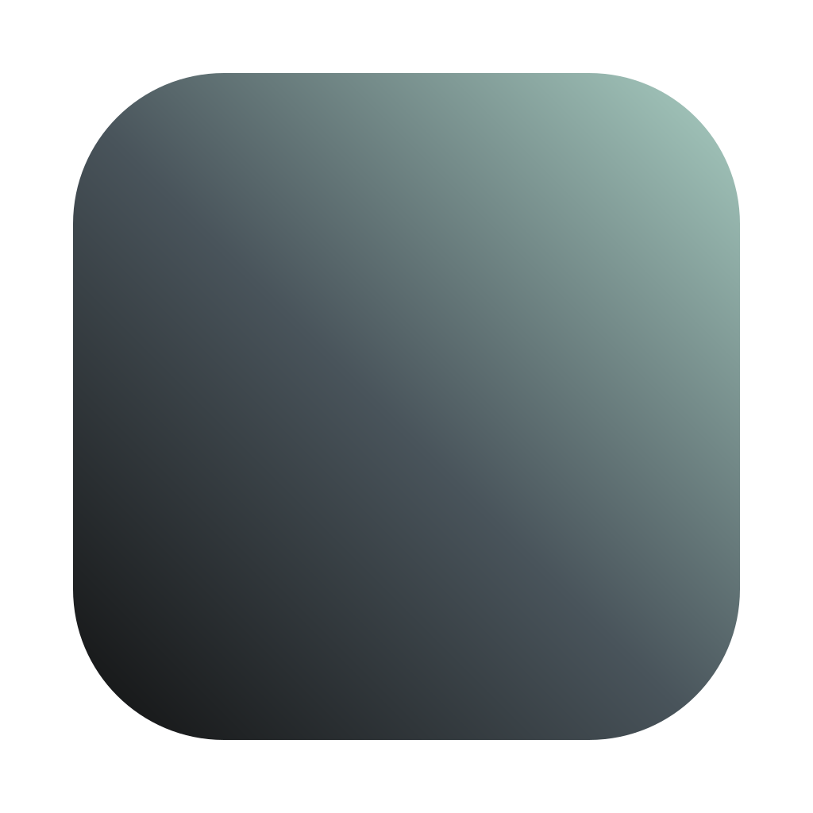

Density
Fit useful information without making the interface feel crowded.
Public design foundation
A small set of design tokens, fonts, and practical patterns for keeping independent web, browser-extension, and macOS products visually consistent.
No account or upload is required. This static reference has no analytics code, cookies, or browser storage. How App Stylr handles data

Getting started
Start with CSS for a web page or extension. App Stylr provides values and assets, not application components or behavior.
npm install "github:kylbutlr/app-stylr#v1.0.0"Pinning keeps token changes deliberate and reviewable.
@import "app-stylr/fonts.css";
@import "app-stylr/css";Import both once in your application stylesheet.
.panel {
color: var(--ui-text);
background: var(--ui-surface);
}Use roles such as text and surface instead of copying palette values.
App Stylr supplies reusable visual values, generated adapters, fonts, icon tools, and optional guidance. It does not add accounts, save application data, send project files over the network, replace native controls, or manage your releases.
Design principles
Each application can vary in function while keeping the same product character.
Fit useful information without making the interface feel crowded.
Separate headings, labels, body copy, and controls at a glance.
Stay calm, precise, useful, and warm without becoming decorative.
Foundation
Charcoal structure moves toward a restrained mint signal.
#111111
#2E3135
#49545B
#647B81
#83A4A3
#A9CEC2
System specimen
Typography, controls, status, spacing, and radius stay coherent while semantic theme values change.
Static examples: the controls below demonstrate appearance and states. They do not save, sync, open settings, or change application data.
Saturday, August 15
Account
Keep secondary surfaces quiet and let hierarchy come from spacing, borders, and typography.
Typography
Sans for interaction and reading. Mono for precise metadata.
Calm tools for daily work.
Clear hierarchy, quiet surfaces.
Progress without noise.
App Stylr keeps product decisions recognizable across apps while leaving room for each tool to solve its own problem.
SYNCED 14:32 · APP-STYLR@1.0.0
Aa Bb Gg Kk Rr 0123456789 & @ #
Feedback
Color reinforces meaning. Text and symbols carry it.
The new files are ready in your chosen folder.
Choose a square SVG or PNG and try again.
Choose a folder you can edit, then run the command again.
No files will change while the command verifies generated output.
Responsive chrome
Panels change placement without changing their semantic role.
Brand expression
Every export begins with the same 1024px master construction.
1024Master canvas
840Rounded square
190Corner radius
9%Transparent space
Design direction
Keep the interface direct, useful, and recognizable without flattening product-specific needs.
Keep language concise, direct, and warm. Make the next action easy to understand.
Use Geist Sans for the interface and Geist Mono for technical metadata and identifiers.
Privacy
App Stylr has no account, cloud service, telemetry, or upload feature. Its commands read and write only the local files and folders you choose.
No form data, cookies, analytics code, or browser storage is used.
Selected inputs are processed locally. Nothing is uploaded by App Stylr.
Your package provider handles the download. App Stylr code sends no install event.
This page’s web host may process ordinary request data needed to deliver it. Read the complete privacy details for storage, deletion, hosting, and command-specific behavior.